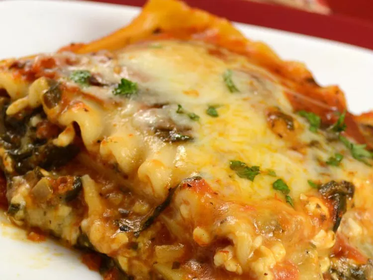

Vego Lasagna

Description
Tasty and Easy alternative to the original. This is a vegetarian recepie. The use of cottage cheese makes it sliglty simpler than a regular lasagna.
Ingredients
- 1 tablespoon olive oil
- 10 ounce frozen chopped spinach
- ½ onion, chopped
- 2 cloves garlic, crushed
- ½ teaspoon dried oregano
- ½ teaspoon dried basil
- 32 ounce crushed tomatoes
- 1 ½ cups water
- 2 cups cottage cheese
- 8 ounce mozzarella cheese, shredded
- ½ cup chopped fresh parsley
- ¼ cup parmesan cheese, garted
- 1 egg
- 1 teaspoon salt
- ⅛ teaspoon black pepper
- 12 uncooked lasagna noodles
Instructions
- Preheat the oven to 350 degrees F (175 degrees C).
- Heat oil in a large pot over medium heat.
- Add spinach, onion, garlic, oregano, and basil; sauté until onion has softened, 3 to 5 minutes.
- Pour in spaghetti sauce and water; simmer for 20 minutes.
- Meanwhile, mix cottage cheese, mozzarella, parsley, Parmesan, egg, salt, and pepper together in a bowl - until well combined.
- Remove sauce from the heat; spoon a small amount into the bottom of a 9x13-inch baking pan.
- Place four uncooked noodles on top of sauce, then top with 1/3 of the remaining sauce. Layer with four more noodles, 1/2 of the remaining sauce, and 1/2 of the cheese mixture. Repeat layers once more with remaining noodles, sauce, and cheese mixture.
- Cover with foil.
- Bake in the preheated oven for 55 minutes.
- Remove the foil and bake for 15 more minutes. (Let sit for 10 minutes before serving.)
This is a recipie inspired by:
All Recipies